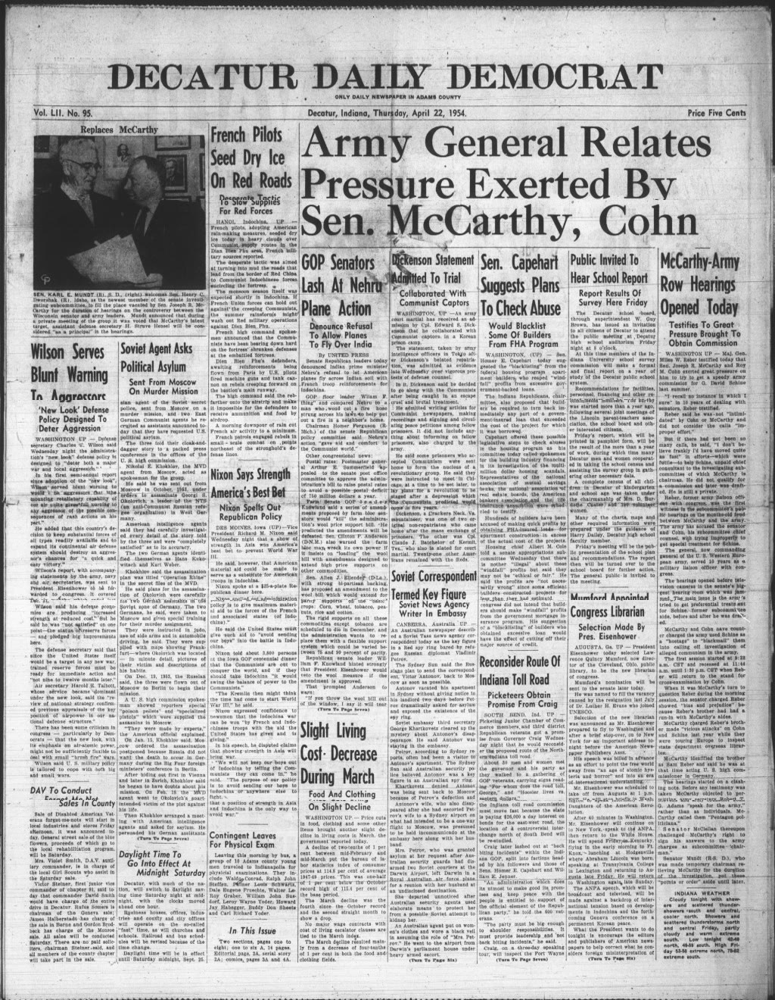
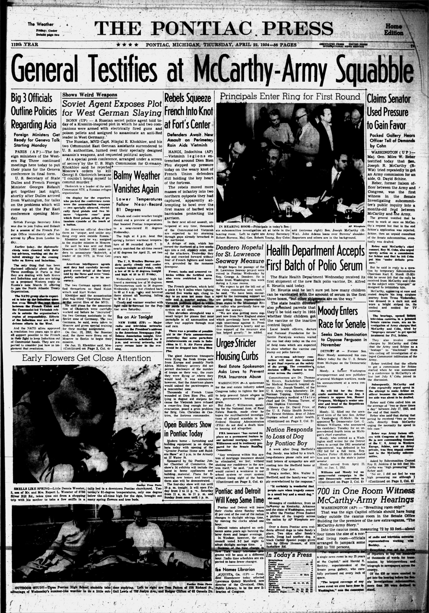

HN HN-598 · April 22, 1954 · Politics, Government & Diplomacy > Government Investigations & Abuse of Power > Oversight
Source: Decatur Daily Democrat, p. 1 — original page; U.S. Senate, McCarthy and Army–McCarthy hearings.
Report: A photograph showed Senator Karl Mundt welcoming a replacement member to the investigating subcommittee as Joseph McCarthy stepped back from membership for the hearings over his dispute with Army leaders.
Assessment: The televised Army–McCarthy hearings began April 22. A committee photograph is not a determination that McCarthy's accusations were true; the scope, membership, testimony, and subsequent December 1954 Senate censure are separate events.
Identity-review candidate peers: HN-600:Algorithmic
Authentic images retrieved from Hoosier State Chronicles (Indiana State Library) and Oakland University (The Pontiac Press). Article crops are located using the archive's own OCR word coordinates and rendered at native crop resolution; article clips are assembled from the archive's own article-block images; page images marked "archive tiles" are stitched from the archive's own tiled page service at its 256-px tile cap; page images marked "issue PDF" are single pages rasterised from the archive's own issue PDF, with the page chosen by matching the headline against the PDF's text layer; page scans are reduced-size access renditions. No images were generated, mocked, or retouched.


Not yet acquired. Queued for provider-specific acquisition testing (see source-acquisition manifest).
URL (preserved verbatim): https://newspapers.library.in.gov/?a=d&d=DCDD19540422.1.1
Saved research report: Historical_Newspaper_Event_Research_578-602_2026-10-23.md
Evidence note: A newspaper report means a historical publication made a claim; it does not establish that claim as fact. Contemporary reporting is separated from later scholarly context and our own assessment.